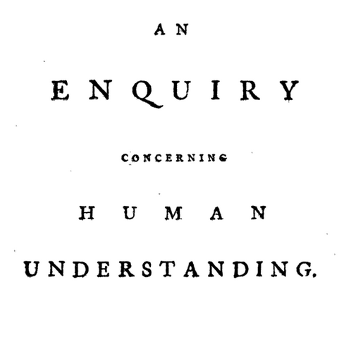

Hume’s Enquiry
Mon., Mar. 18
In this class, we discuss the first chapters of Hume’s Enquiry concerning Human Understanding. Hume wishes to address philosophical questions (and debunk religious metaphysics) from the perspective of empirical psychology—a painstaking scientific anatomy of the human mind. He reframes Lockean concept empiricism (and anti-nativism) in terms of the so-called Copy Principle: each idea is copied from an impression. But unlike Locke, Hume places great emphasis on the ‘principles of association’: the natural patterns by which human minds tend to go from one idea to another.
Key Concepts: Copy Principle, Association
Readings:
Chs. 2, 3 required; Ch. 1 optional
Powerpoint Slides:
Other Resources:
Early Modern Texts
Stanford Encyclopedia of Philosophy
Internet Encyclopedia of Philosophy